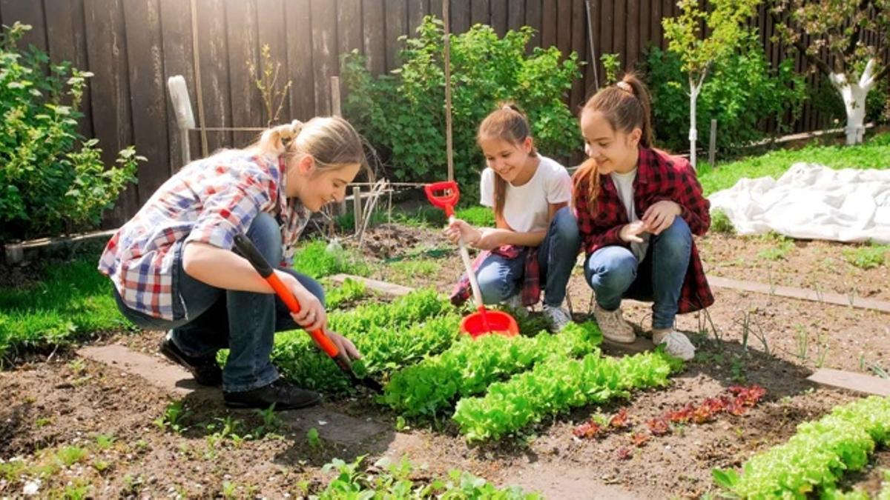

HUERTA EN CASA® En cada casa, una huerta!
Nuestra premisa es hacer de la huerta una experiencia accesible, linda y útil. Sabemos que la huerta agroecológica familiar es una alternativa poderosa para mejorar la calidad de vida de las personas y de la comunidad.
Somos una empresa nacida en Jesús María, Provincia de Córdoba, a principios del año 2020 en plena pandemia. Nos propusimos colaborar para que en toda la Argentina cualquier familia pudiera recibir todo lo necesario para tener su huerta.
En cualquier vivienda, siempre vamos a tenemos opciones para realizar una huerta. Ya sea en macetas, en un patio de tierra, en una terraza, en pequeños o grandes espacios.
Somos una empresa nacida en Jesús María, Provincia de Córdoba, a principios del año 2020 en plena pandemia. Nos propusimos colaborar para que en toda la Argentina cualquier familia pudiera recibir todo lo necesario para tener su huerta.
En cualquier vivienda, siempre vamos a tenemos opciones para realizar una huerta. Ya sea en macetas, en un patio de tierra, en una terraza, en pequeños o grandes espacios.
LA HUERTA FAMILIAR TIENE MULTIPLES BENEFICIOS
Facilita el acceso a alimentos sanos durante todo el año.Promueve el encuentro de toda la familia en una actividad saludable, donde nos conectamos con la tierra y la naturaleza.
Colabora con la economía familiar, mediante un importante ahorro que puede destinarse a otros fines. Colabora en la disminución de la contaminación, ya que se evita el traslado de las verduras desde grandes distancias.
Formamos parte de una nueva generación de emprendedores orientados a generar un triple impacto en la comunidad: Ambiental, Social y Económico.
Trabajamos con semillas naturales de excelente calidad, sin agroquímicos, provenientes principalmente de pequeños productores asociados a la federación de cooperativas más importante de nuestro país en este rubro.

NUESTOS PRODUCTOS
El objetivo del kit es que una familia pueda tener una huerta variada, a un precio accesible. Tiene semillas suficientes para sembrar 2 o 3 veces cada variedad de manera escalonada en la temporada, para tener verduras frescas todo el tiempo.También elaboramos Kits personalizados para municipios, instituciones, clubes, asociaciones y regalos empresariales.Otra opción son semillas por variedad, que se comercializan en sobres individuales, con su etiqueta e indicaciones básicas para su siembra y germinación.
Además de las semillas, ofrecemos bandejas de germinación, muebles para huerta urbana, tierra, sustratos, lombrices californianas, fertilizantes orgánicos y distintos productos para la huerta familiar.Con la compra de cualquier producto, enviamos manuales de huerta y materiales de interés en formato digital.
Nuestros principales productos son los kit de semillas, que vamos renovando en cada temporada con variedades acordes a la estación del año.